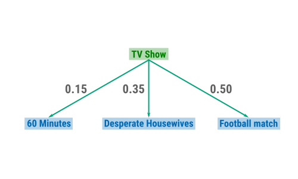
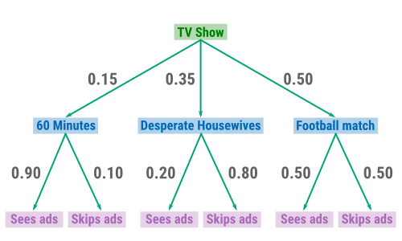

Probability Trees¶
Probability Tree¶
Probability Tree
A probability tree is a graphical depiction of conditional probabilities. It shows a sequence of events as a path, like branches of a tree.
Example: Success of TV Advertising¶
Assume there are three programs that can be viewed on a Sunday evening. Viewers can either watch ‘60 Minutes’, ‘Desperate Housewives’ or a football match. We want to investigate how successfull TV advertisement is given the TV program that can be watched. For each program, we collect data on the percentage of viewers that:
Watch the ads,
Skip the ads.
Marginal Probabilities¶
It is given that the viewers watch the three respective shows with the following probabilities:
\(P(\text{60 Minutes}) = 0.15\),
\(P(\text{Desperate Housewives}) = 0.35\),
\(P(\text{Football match}) = 0.5\).
The three probabilities above represent marginal probabilities. These probabilities are illustrated in the probability tree below.
{kind=link}
Conditional Probabilities¶
There are six different conditional probabilities on whether a viewer watches ads or not, e.g.:
\(P(\text{Sees ads}\,|\,\text{60 Minutes}) = 0.9\),
\(P(\text{Skips ads}\,|\,\text{60 Minutes}) = 0.1\),
\(P(\text{Sees ads}\,|\,\text{Desperate Housewives}) = 0.2\),
\(P(\text{Skips ads}\,|\,\text{Desperate Housewives}) = 0.8\),
\(P(\text{Sees ads}\,|\,\text{Football match}) = 0.5\),
\(P(\text{Skips ads}\,|\,\text{Football match}) = 0.5\).
These conditional probabilities are illustrated in the probability tree below.
{kind=link}
Working with Probability Trees
Let \(A_1, A_2 , \dots, A_n\) be \(n\) mutually exclusive and collectively exhaustive events. In addition, let \(B_1 , B_2, \dots, B_k\) be \(k\) mutually exclusive and collectively exhaustive events. Then \(P(A_1 \cap B_2)\) is the joint probability on the events \(A_1\) and \(B_2\). Computing the marginal probability of \(A_1\) can be done in the following way:
Question 1: Using the probability tree above, what is the joint probability for ‘Football match’ and ‘Sees Ads’ (i.e. \(P(\text{Sees ads}\cap\text{Football match})\))?
Solution: We know from conditional probability that:
It is given that: \(P(\text{Football match}) =0.5\) and \(P(\text{Sees ads}\,|\,\text{Football match}) = 0.5\). Therefore:
Question 2: What is the marginal probability for ‘Sees Ads’ (i.e. \(P(\text{Sees ads})\))?
Solution: We know from “working with probability trees” that we can calculate \(P(\text{Sees ads})\) the following way:
We get:
60 Minutes |
Desperate Housewives |
Football match |
Total |
|
|---|---|---|---|---|
Sees Ads |
||||
Skips Ads |
||||
Total |
1 |
Question 3: Consider the previous question. Fill in the contingency table above.
Solution: From the previous questions, we know that \(P(\text{Sees ads}) = 0.455\) and \(P(\text{Sees ads}\cap\text{Football match}) = 0.25\). Therefore we can calculate \(P(\text{Skips ads})\) and \(P(\text{Skips ads}\cap\text{Football match})\). We get:
\(P(\text{Skips ads}) = 1-0.455 = 0.545\)
\(P(\text{Skips ads}\cap\text{Football match}) = P(\text{Football match}) - P(\text{Football match}\cap\text{Sees ads})\) \(P(\text{Skips ads}\cap\text{Football match}) = 0.5 -0.25 = 0.25\)
From the probability tree, we know that \(P(\text{60 Minutes}) = 0.15\), \(P(\text{Desperate Housewives}) = 0.35\) and \(P(\text{Football match}) = 0.50\). Similar reasoning as in the previous question for the other joint probabilities yields the contingency table below.
60 Minutes |
Desperate Housewives |
Football match |
Total |
|
|---|---|---|---|---|
Sees Ads |
0.135 |
0.07 |
0.25 |
0.455 |
Skips Ads |
0.015 |
0.28 |
0.25 |
0.545 |
Total |
0.15 |
0.35 |
0.50 |
1 |
Example: Spam Filter¶
Assume workers of a company want to filter out junk mail from important mail messages. They base their method on past data. For example, 20% of all emails that were considered junk mail contained the word combination “Nigerian general”. Past data indicates the following probabilities:
\(P(\text{Nigerian general appears}\,|\,\text{Junk mail}) = 0.2\),
\(P(\text{Nigerian general appears}\,|\,\text{Not junk mail}) = 0.001\),
\(P(\text{Junk mail}) = 0.50\).
Junk mail |
Not junk mail |
Total |
|
|---|---|---|---|
Nigerian general appears |
|||
Nigerian general does not appear |
|||
Total |
1 |
Question 1: Fill in the contingency table above.
Solution: It is given that \(P(\text{Junk mail}) = 0.50\). Therefore:
\(P(\text{Not junk mail}) = 1- 0.5 = 0.5\)
\(P(\text{Nigerian general appears} \cap \text{Junk mail})\) \( = P(\text{Nigerian general appears}\,|\,\text{Junk mail}) \cdot P(\text{Junk mail}) = 0.2 \cdot 0.5 = 0.1\),
\(P(\text{Nigerian general appears} \cap \text{No junk mail})\) \( = P(\text{Nigerian general appears}\,|\,\text{No junk mail}) \cdot P(\text{No junk mail}) = 0.001 \cdot 0.5 = 0.0005\),
Similar reasoning for \(P(\text{Nigerian general does not appears} \cap \text{Junk mail})\) and \(P(\text{Nigerian general does not appears} \cap \text{No junk mail})\) leads to the contingency table below.
Junk mail |
Not junk mail |
Total |
|
|---|---|---|---|
Nigerian general appears |
0.1 |
0.0005 |
0.1005 |
Nigerian general does not appear |
0.4 |
0.4995 |
0.8995 |
Total |
0.5 |
0.5 |
1 |
Question 2: Using the contingency table above, calculate the probability that an email should be considered junk mail given that the phrase “Nigerian general” appears.
Solution:
We can conclude that email messages to this employee with the phrase “Nigerian general” have a high probability (more than 99% ) of being spam. The spam filter should move emails containing this phrase straight to the junk folder.